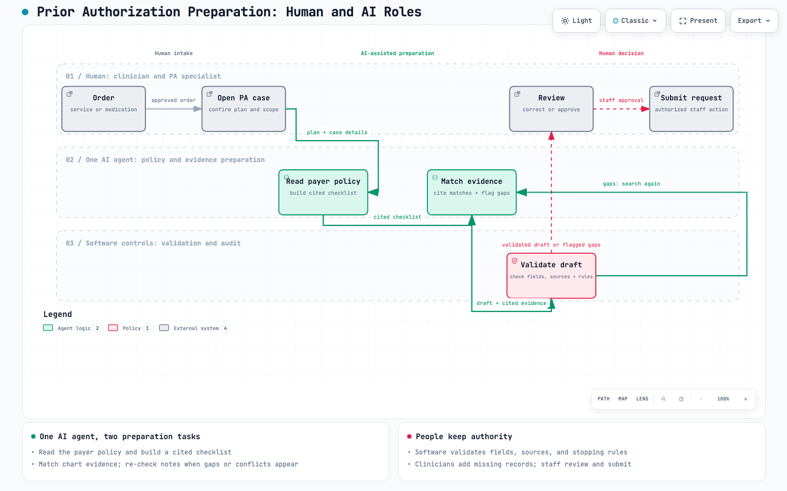

Negative clinical impact
reported that PA has a somewhat or significant negative impact on patient clinical outcomes.
A focused look at the documented problem, one possible clinic-side bottleneck, and a safe way to test agentic AI.
Prepared by Wendyl Jaca
Source: American Medical Association (AMA), 2024 Prior Authorization Physician Survey, n=1,000 practicing U.S. physicians.
reported that PA has a somewhat or significant negative impact on patient clinical outcomes.
reported that PA somewhat or significantly increases physician burnout.
reported that PA leads to somewhat or significant additional healthcare use.
What this evidence establishes: Across 1,000 practicing physicians, prior authorization is consistently reported as delaying care, consuming clinical time, and increasing healthcare use. This is strong evidence of a widespread problem.
Source: American Medical Association (AMA), 2024 Prior Authorization Physician Survey, n=1,000 practicing U.S. physicians.
reported that PA has a somewhat or significant negative impact on patient clinical outcomes.
reported that PA criteria are rarely or never evidence-based.
Source: American Medical Association (AMA), 2024 Prior Authorization Physician Survey, n=1,000 practicing U.S. physicians.
reported that PA somewhat or significantly increases physician burnout.
were concerned that AI increases or will increase PA denial rates. The AMA describes this as concern about health plans' use of AI.
Operational meaning: PA-related administrative work consumes physician and staff capacity that could otherwise support patient care. Our concept aims to reduce preparation work while keeping review and submission with people. If health plans increasingly screen requests with AI, a clinic-side pre-check may help staff catch avoidable gaps before submission. This is a hypothesis to test.
Source: American Medical Association (AMA), 2024 Prior Authorization Physician Survey, n=1,000 practicing U.S. physicians.
Why this matters: Limited time and low confidence in appeals may allow avoidable denials to stand, even when care cannot wait.
Measured rate for comparison: Medicare Advantage insurers denied 7.7% of PA requests in 2024, and more than 80% of appealed denials were overturned (KFF). This is a different measure from the survey, so the two should not be combined.
Source: American Medical Association (AMA), 2024 Prior Authorization Physician Survey, n=1,000 practicing U.S. physicians.
PA requires physician and staff labor, and many practices dedicate employees exclusively to the work.
Physicians reported additional visits, ineffective first treatments, emergency care, hospital stays, and out-of-pocket medication purchases.
Evidence boundary: These findings show reported time and resource effects. The survey does not calculate one total dollar cost of PA.
Source: American Medical Association (AMA), 2024 Prior Authorization Physician Survey, n=1,000 practicing U.S. physicians.
The survey supports a problem with administrative workload, requirement transparency, and access to electronic prior authorization.
Nearly one in three reported that PA requirement information in the EHR or e-prescribing system was rarely or never accurate. It does not mean the patient chart itself was inaccurate.
CMS describes prior authorization and pre-claim review as ways to verify coverage and documentation earlier. In several targeted Medicare programs, CMS identified additional documentation not supplied during initial review as a common reason appealed claims were later overturned.
Open CMS FY2024 PDFBoundary: These statistics cover specific Medicare Fee-for-Service programs, not every payer or PA request.
OIG estimated that 13% of denied Medicare Advantage PA requests in its sample met Medicare coverage rules. It found use of additional plan criteria and cases where plans requested unnecessary documentation or called records insufficient even when reviewers found the existing record adequate.
Open HHS-OIG ReportBoundary: The review examined denials from 15 large Medicare Advantage organizations during one week in 2019.
Design implication: The agent should not only find missing documents. It should cite the governing requirement, distinguish plan criteria from Medicare rules, preserve the evidence trail, and flag conflicts for human review.
Payer: the patient's insurance company or health plan, such as a commercial insurer, a Medicare Advantage plan, or Medicaid. Payers decide which services need PA and approve or deny each request.
Clinic staff must identify the correct payer requirements and find supporting chart evidence. The broader evidence shows that PA is associated with care delays, administrative workload, physician burnout, and added healthcare use. We still need local workflow data to measure how much searching and rework occurs before submission.
The agent turns the current payer policy into a checklist, matches existing chart evidence to each requirement, and flags missing or uncertain items. Software validates fields and sources. Authorized staff correct, approve, and submit the request.
What it does not solve: The concept does not decide medical necessity, approve coverage, or guarantee fewer denials. It is designed to reduce avoidable searching and rework during clinic-side preparation.
Prepares requests, searches payer requirements, gathers records, and manages follow-up.
Provides or confirms the clinical evidence and keeps medical decision authority.
Benefits when a complete request moves forward without avoidable preparation delays.
Owns staffing, performance, budget, implementation risk, and measurable results.
Applies the payer's coverage rules and retains the approval or denial decision.
Review system access, data handling, integration, auditability, and organizational risk.
Stakeholder hypothesis: Interview the daily user first, then confirm who owns the workflow, budget, implementation approval, and success measures.
Today, staff may handle all four steps. In the proposed concept, one AI agent assists with two related preparation tasks in steps 2 and 3. If evidence is missing or conflicting, the agent searches the chart again; real gaps go to the clinician to add records before staff review.

Read the current payer policy, identify case-specific requirements, locate existing chart support, and flag missing, conflicting, or uncertain information.
Give staff one traceable draft showing each requirement, the supporting evidence, its source, and the gaps that need attention before submission.
Policies and clinical notes are text-heavy and differently organized. An agent may adapt its search and matching steps while citing its sources and escalating uncertainty.
Where an agent is most likely needed: Searching and reconciling the chart: deciding where to look, checking dates and durations across scattered notes, resolving conflicts, and escalating uncertainty. Turning the policy into a checklist may work with simpler structured extraction; we would test that. Ordinary software validates required fields, citations, stopping rules, and the audit record. Authorized staff correct, approve, and submit.
What we still need to prove: Does the agent prepare an accurate draft faster or with fewer staff corrections than a simpler search, checklist, or rules-based tool?
Silna says its Predictive Document Intelligence checks clinical documents for completeness before submission. Flexbone says its agents assemble the documentation a payer needs, with staff reviewing before anything is sent. Humata Health launched a drag-and-drop upload portal for independent practices and specialty clinics in June 2026. Waystar, Optum, Notable, and AKASA list similar products in industry directories.
Silna · Flexbone · Humata | Boundary: These are vendor claims. We found no independent performance data, and adoption by clinics is unknown.
Medicare Advantage, Medicaid, CHIP, and federal-exchange health plans must offer a Prior Authorization API that identifies documentation requirements. Drugs are excluded, and most commercial plans are outside the rule. The API says what is required; staff still have to find the evidence in the chart.
The HL7 Da Vinci standards (CRD, DTR, PAS) support this. DTR uses rules to pull structured EHR data into payer questionnaires. Unstructured clinical notes remain a gap.
Open CMS fact sheetPossible angle: traceable reasoning, not a new function. Every requirement cites its policy clause and chart source, plan criteria are separated from Medicare rules, and the system stops for a person when evidence is missing or uncertain. Team question: Is a more transparent version of an existing tool a strong enough story compared with our other concepts?
Our working theory is that cost, adoption, and system compatibility keep many clinics from using these tools. Each part is a hypothesis to test, not a finding.
Theory: Staff time lost to PA and burnout costs more than a well-priced tool.
Challenge: Buyers pay from a fixed budget, and burnout is hard to put a dollar value on.
Test: Minutes saved per case × staff wage × requests per week.
Theory: A simple interface, clear handover, training, and support help staff adopt the tool.
Challenge: Healthcare adoption also depends on trust, liability, and compliance approval.
Test: Ask PA specialists what software they use today and, if none, why not.
Theory: Full EHR integration is not required to reduce preparation work.
Challenge: Staff would export and upload records, adding steps and moving patient data into another system that must meet HIPAA.
Signal: Humata's upload portal for small clinics (June 2026) suggests vendors expect clinics to accept uploads, and it is a direct competitor.
Test: Ask whether staff would upload chart PDFs and whether compliance would allow it.
Evidence so far: Only 35% of medical prior authorizations are fully electronic (2024 CAQH Index), and only 23% of physicians said their EHR offered electronic PA for prescriptions (AMA, slide 7). This fits an adoption gap but does not explain why.
Authority boundary: The clinic prepares the request. Authorized clinicians and payer reviewers keep their existing decision authority.
| Criterion | How the project can address it | What we still need to prove |
|---|---|---|
| Agent Design & Architecture · 25% | Use one bounded AI role to read approved payer policies, build a cited checklist, match chart evidence, and flag gaps. Software rules control sources, validation, and human approval. | A working prototype showing why an agent is useful and which steps should remain ordinary automation. |
| Autonomy & Self-correction · 20% | The workflow can detect missing or conflicting evidence, retry approved sources, report uncertainty, and stop for staff review instead of guessing. | A visible activity record showing checks, retries, changed course, and escalation to a person. |
| Real-world Impact · 20% | The AMA survey establishes the scale of the PA problem. The prototype can measure preparation time, requirement accuracy, gap detection, and human corrections. | A local baseline and test results showing improvement without increasing clinical, privacy, or compliance risk. |
| Technical Execution · 20% | Build an end-to-end demo using public payer policies, synthetic patient records, source citations, validation rules, human review, logs, and failure handling. | Repeatable normal and exception tests, secure data handling, and the required ArgosX scan. |
| Demo & Presentation · 15% | Show the documented problem, one normal case, one missing-evidence exception, the system stopping or changing course, and the final human decision. | A rehearsed seven-minute demo with visible steps, measured results, and no unsupported claims. |
Is this narrow problem useful, measurable, and suitable for an eight-week hackathon build?